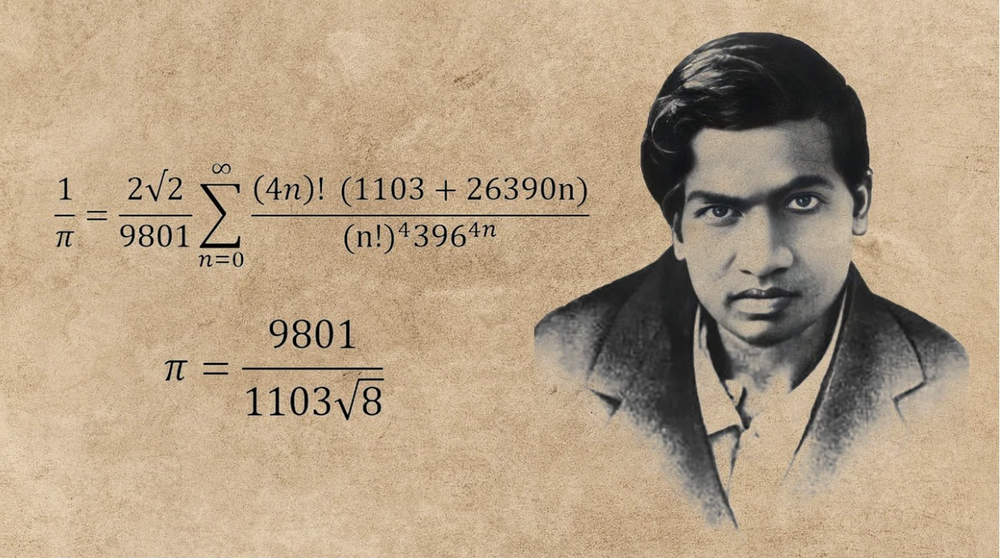

"An equation means nothing to me unless it expresses a thought of God."
~ Srinivasa Ramanujan
About Srinivasa Ramanujan:The Man Who Knew Infinity
Srinivasa Ramanujan (1887-1920) was an Indian mathematician whose contributions to mathematical analysis, number theory, infinite series, and continued fractions have had a profound impact on the field. Despite little formal training in pure mathematics, he produced groundbreaking work that continues to inspire mathematicians today.
Early Life
Born in Erode, Tamil Nadu, Ramanujan showed an early aptitude for mathematics. He was largely self-taught, developing his own mathematical theories. His unique approach combined intuition and rigorous mathematical reasoning, which led him to discover many results that were not previously known.
Key Contributions
- The Ramanujan Prime
- The Ramanujan-Hardy Number (1729)
- Modular Forms and Partitions
- Ramanujan's Work on Infinite Series
Legacy
Ramanujan's work laid the foundation for many areas of mathematics. His collaboration with the British mathematician G.H. Hardy brought him to Cambridge, where he gained international recognition. Ramanujan's notebooks, filled with his discoveries, are still studied and explored by mathematicians around the world.
Fact
-
When Ramanujan was 15 years old, he obtained a copy of George Shoobridge Carr’s Synopsis of Elementary Results in Pure and Applied Mathematics. This book was his main source of inspiration and expertise. It consists of a large number of mathematical theorems, many presented without proofs, and those with proofs only have the briefest. Ramanujan verified the results in Carr's book and went beyond it. He developed his own theorems and ideas. He also secured a scholarship to the University of Madras in 1903 but lost it in the following year, as he neglected all other studies due to mathematics.
-
A deeply religious Hindu, Ramanujan credited his substantial mathematical capacities to divinity, and said the mathematical knowledge he displayed was revealed to him by his family goddess Namagiri Thayar. He once said, "An equation for me has no meaning unless it expresses a thought of God."
About Ramanujan Block :
Summary of Ramanujan Block
- Location: The Ramanujan Block is situated within the Chitkara University campus, contributing to the institution's robust academic infrastructure.
- Purpose and Significance: This building serves as a crucial academic space, designed to enhance the learning experience for students across various disciplines. Its thoughtful architecture and layout promote interaction and collaboration among students and faculty.
- Structure: The Ramanujan Block comprises three floors, each meticulously designed to house various educational facilities that support both theoretical learning and practical application.
- Facilities:
- Classrooms: Equipped with modern teaching aids and technologies, the classrooms are designed to facilitate an engaging learning environment. They accommodate different teaching styles and promote active participation from students.
- Electronic Lab: This lab provides students with hands-on experience in electronics, allowing them to apply theoretical knowledge in practical scenarios. It is equipped with state-of-the-art tools and resources necessary for experiments and projects.
- Computer Lab: The computer lab is designed to support technology-based learning, featuring advanced computers and software that cater to various academic needs. It serves as a space for students to develop their digital skills and engage in research activities.
Other Notable Buildings on Campus
- Gandhi Block: This block offers additional academic facilities and classrooms, further enriching the educational landscape of the university. It is dedicated to supporting a diverse range of academic programs.
- CV Raman Block: The CV Raman Block is another integral part of the campus, providing resources and facilities that cater to specific fields of study, thereby enhancing the overall academic experience.
- Kalam Block: The Kalam Block houses more classrooms and laboratories, ensuring that students have access to essential learning environments across various disciplines.
- Tagore Library: Located on campus, the Tagore Library serves as a vital resource hub for students and faculty. It offers a wide range of academic materials, including books, journals, and digital resources, supporting research and learning activities throughout the university.